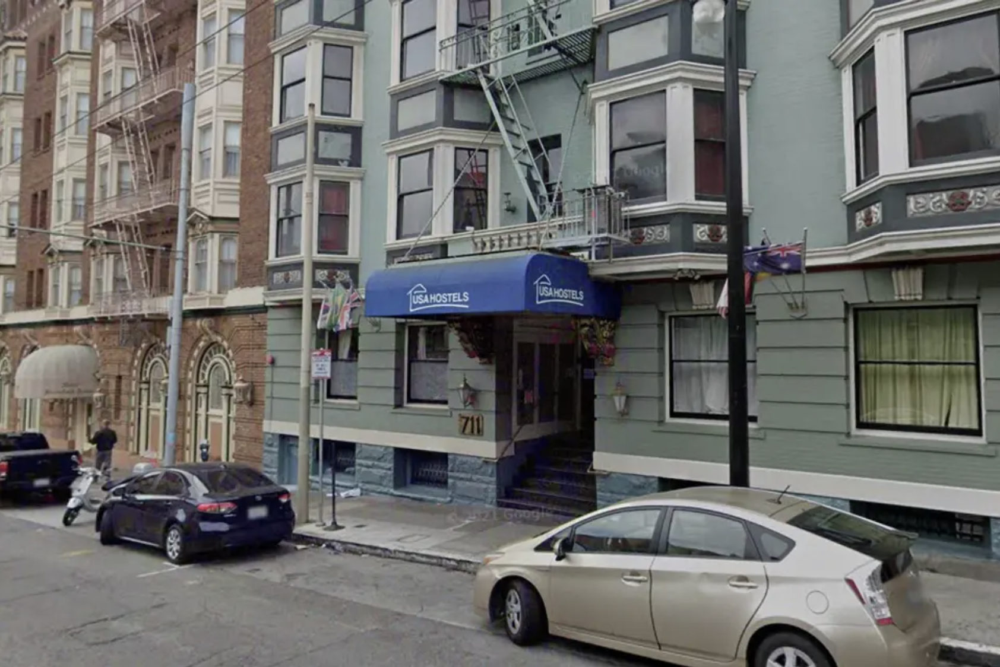

Most Recent

Mayor Lurie says he's trading S.F. shelter beds for sites with more services. Critics aren't convinced.
San Francisco Chronicle
April 12, 2026
Click any headline to uncover what's behind the story.

San Francisco Chronicle
April 12, 2026
Behind the number 280 are people. People who stood in line at 6 a.m. People who finally had a place to leave a bag while they looked for work. People who slept somewhere warm for the first time in months.
A shelter bed is not just a bed. For many, it is the first stable point in a long stretch of instability, a place to shower, to receive mail, to be found by a caseworker. When that bed disappears, the person does not. They go back to a tent, a doorway, or nowhere at all.
The 400 people on the waitlist are not an abstraction. Each one has a name, a history, and a reason they ended up asking the city for help. The headline tells us about policy. It does not tell us about them.
The city's plan assumes that treatment-based housing can simply replace traditional shelter. Treatment-based housing requires residents to be enrolled in or actively pursuing drug or mental health treatment as a condition of having a bed. But not everyone experiencing homelessness has a substance use disorder or a diagnosed mental health condition. Many are homeless because of eviction, job loss, domestic violence, or medical debt. For them, a treatment bed comes with conditions they don't qualify for or aren't ready to meet. It is not a step up. It is a different line entirely.
Closing a shelter before alternatives are fully operational is not a new pattern in San Francisco. Each administration reframes the approach, Housing First, treatment first, accountability, while the fundamental shortage of affordable housing remains unchanged.
As advocate Lukas Illa put it, when cities remove low-barrier options without creating accessible alternatives, the people who don't qualify for treatment-based housing don't disappear. They return to the street, where surviving in public space is increasingly treated as a crime.
"Where are they going to go? If the answer is jail, then say that."
711 Post Street is a 280-bed shelter currently housing people experiencing homelessness in Lower Nob Hill. It closes in March 2027.
As of this article, nearly 400 people are already on the citywide waitlist for a shelter bed. That means demand already exceeds supply before this closure even takes effect.
The mayor's office says a net 202 beds have been added since Lurie took office. But that number was calculated before this closure was announced. Once 711 Post shuts down, roughly 250 of those beds are gone, erasing the net gain entirely.
San Francisco's median rent sits above $3,000 a month. A person working full time at minimum wage takes home roughly $3,400 a month before taxes. No amount of shelter restructuring changes that math. And until the math changes, the waitlist will keep growing.